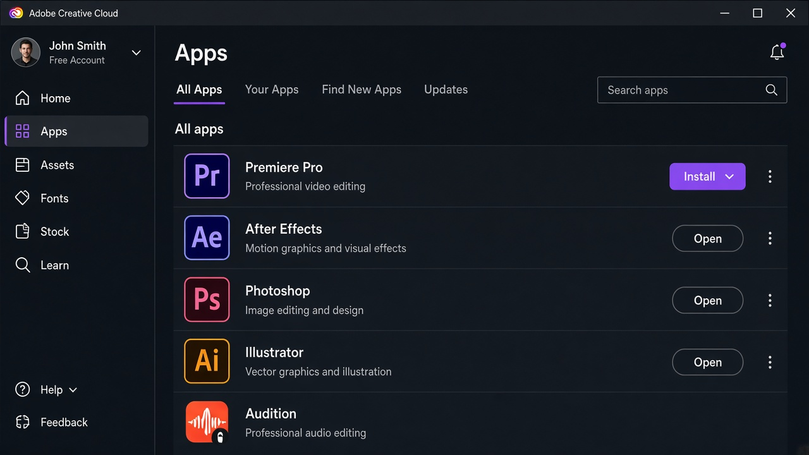
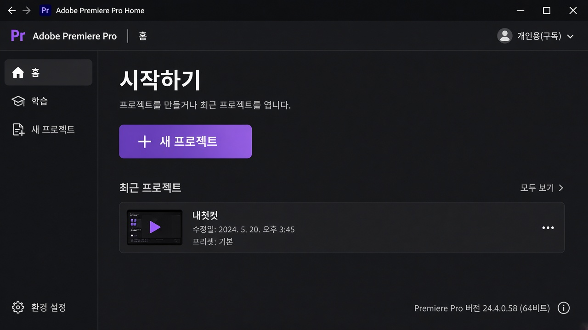
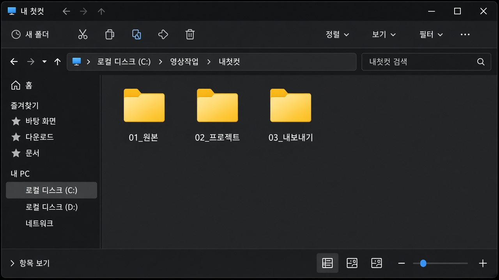
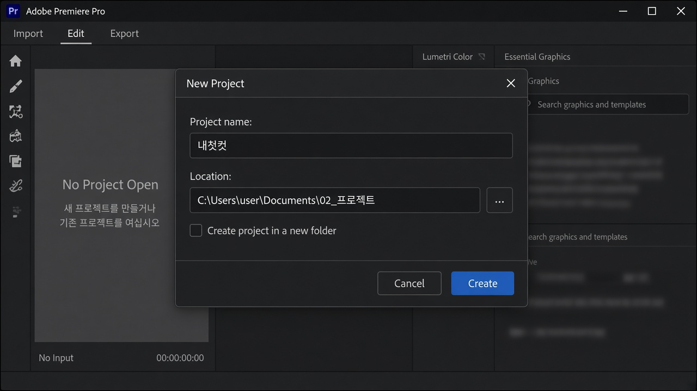

레슨 01
프리미어 프로 시작하기
프로그램을 설치하고, 첫 화면을 이해하고, 빈 프로젝트 하나를 저장할 수 있게 됩니다.
목표. Creative Cloud에서 Premiere Pro를 설치한 뒤, 작업 폴더를 만들고 새 프로젝트까지 엽니다.
프리미어 프로가 하는 일
프리미어 프로는 촬영한 영상을 타임라인에 올려 자르고, 붙이고, 소리와 화면을 맞추는 프로그램입니다. 컷편집이 핵심 작업입니다. 색보정과 이펙트는 컷이 끝난 뒤에 해도 늦지 않습니다.

준비물
- Adobe ID (이메일 계정). 없으면 adobe.com에서 만듭니다.
- Creative Cloud 데스크톱 앱. 프리미어는 이 앱을 통해 설치합니다.
- 여유 디스크 공간. 프로그램과 영상 원본을 둘 곳이 필요합니다.
- 작업용 폴더. 바탕화면에 흩지 말고, 프로젝트마다 폴더를 나눕니다.
구독·체험판 가격은 시기마다 달라집니다. 결제는 Adobe 공식 페이지에서 확인하세요. 이 가이드는 설치 경로만 안내합니다.
설치 흐름
Adobe ID→
Creative Cloud→
Premiere Pro 설치→
첫 실행→
새 프로젝트
- 브라우저에서 Adobe 계정으로 로그인합니다.
- Creative Cloud 데스크톱 앱을 설치하고 같은 계정으로 로그인합니다.
- 앱 목록에서 Premiere Pro를 찾아 설치를 누릅니다.
- 설치가 끝나면 Creative Cloud에서 열기를 누릅니다.

Mac에서는 이후 단축키의 Ctrl을 Cmd로 바꿔 쓰면 됩니다. 이 가이드는 Windows를 기준으로 적습니다.
첫 실행과 홈 화면
처음 켜면 로그인 상태 확인, 때로는 GPU(하드웨어 가속) 안내가 나옵니다. 잘 모르겠으면 기본값으로 진행해도 됩니다. 편집 화면이 바로 열리지 않고 홈이 보입니다.

- 홈 — 최근 프로젝트, 새 프로젝트 버튼이 있습니다.
- 학습 — Adobe 튜토리얼입니다. 이 사이트와 병행해도 됩니다.
- 새 프로젝트 — 지금 만들 항목입니다. 이름을 짓고 저장 위치를 고릅니다.
작업 폴더를 먼저 만들기
프리미어를 열기 전에 탐색기에서 폴더를 만드세요. 원본과 프로젝트 파일을 한곳에 섞으면 나중에 영상을 옮길 때 링크가 깨집니다.
예: 영상작업/내첫컷/
- 01_원본 — 카메라·폰에서 가져온 파일
- 02_프로젝트 — Premiere 프로젝트(.prproj)
- 03_내보내기 — 완성 MP4

새 프로젝트 열기
- 홈에서 새 프로젝트를 누릅니다.
- 프로젝트 이름을 적습니다. 예: 내첫컷
- 위치는 02_프로젝트 폴더로 지정합니다.
- 만들기를 누르면 어두운 편집 화면이 열립니다. 타임라인이 비어 있어도 정상입니다.
- 파일 → 저장 또는 Ctrl+S로 한 번 저장합니다.

시퀀스(프레임레이트·해상도)와 영상 가져오기는 다음 레슨에서 다룹니다. 지금은 “프로그램이 켜지고, 파일이 폴더에 생겼다”면 충분합니다.